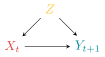

![]()
graph LR X([X]) --> Y([Y]) Z([Z]) --> X([X]) Z([Z]) --> Y([Y])
Back in 2021 I wrote a little guide to how to use tikz chunks in R Markdown documents. {knitr} supports tikz natively, and with some some shenanigans and special settings—and after recompiling LaTeX with one extra feature and setting a new environment variable on macOS—it’s possible to have tikz chunks automatically knit to PDF in PDFs and SVG in HTML and Word. While convoluted, it’s a neat process and I’ve used it for several published papers (like, see Figures A2 and A3 here—those are built with tikz!).
While that process works, I’ve also found it really annoying, and for years I’ve looked for better ways. The very first pre-release version of Quarto was also in 2021, but it was too young to do much with languages beyond R and Python. Since then, though, Quarto has added native support for two different diagram languages: Mermaid and Graphviz. They work well for lots of diagrams, but not for most of the diagrams I make, where (1) I want exact control over where items go, and (2) I want them to look nice and visually fit with the rest of the document.
For instance, let’s say I want to include a minimalist little standard directed acyclic graph (DAG) that shows that some treatment \(X\) causes some outcome \(Y\) in the subsequent time period, but the effect is confounded by a third variable \(Z\). Something like this:
Quick, easy, ugly diagrams with Mermaid and Graphviz
We can create this DAG with Mermaid, but there are limited styling options and there’s not really any good way to control the layout, so we’re pretty much stuck with this:
```{mermaid}
graph LR
X([X]) --> Y([Y])
Z([Z]) --> X([X])
Z([Z]) --> Y([Y])
```We can also use Graphviz to make the same DAG, and it has a few extra options for layout—like here, we tell it that the Z node is the focal point of the diagram and that X and Y should be pushed down:
```{dot}
digraph {
node [shape=circle]
{ rank=source; Z }
{ rank=sink; X; Y }
X -> Y
Z -> X
Z -> Y
}
```That’s all fine, but what if we want, like, control over these diagrams? Or math? Or typographic things like subscripts or superscripts? Good luck.
Nicer diagrams with TikZ
TikZ is very good at making diagrams. It handles math. It handles fancy formatting. It’s also absolutely miserable to work with—you have to draw diagrams with a kinda-sorta-dialect of LaTeX. (Making initial TikZ diagrams is one area where LLMs are incredibly useful!). TikZ also converts exclusively to PDF,1 but you can convert those diagrams from PDF to other formats like SVG or PNG.
1 Technically DVI, but whatever.
Here’s that same DAG as TikZ:
\begin{tikzpicture}[>={stealth}]
\node (x) at (0,0) {$X_{t}$};
\node (y) at (2,0) {$Y_{t + 1}$};
\node (z) at (1,1) {$Z$};
\path[->] (z) edge (x);
\path[->] (z) edge (y);
\path[->] (x) edge (y);
\end{tikzpicture}However, Quarto won’t render this as an image because it requires feeding it through LaTeX. As I show here, it’s possible to use R Markdown with {knitr} in a special tikz chunk, which would appear as a nice diagram when rendering to PDF. With a bunch of extra setup, you can also get tikz chunks to appear as SVG when rendering to non-PDF formats.
My guide still works with Quarto and you can just do that if you want to use TikZ chunks! I’ve been doing it for years! But Quarto re-renders and re-converts each diagram every time you render the document, which is excessive and slow. Getting all the special scaffolding set up is annoying too. It only works with R-based documents. You have to reinstall LaTeX with special extra settings on macOS. You have to create a special chunk template and then hook that into the tikz engine. And you have to do that every time. Oof.
There’s an easier way though!
Converting TikZ to both PDF and SVG with Quarto and diagram
The pandoc team has an extension called diagram that is essentially a fancy Lua filter that will take code for several different diagram languages (including TikZ) and convert them into images.2 In 2023 they reorganized it to work as a Quarto extension, so installing it and using it is nice and straightforward. It’s language agnostic—you don’t have to use it only in an R document. You don’t have to recompile LaTeX on macOS or set any systemwide environment variables. It Just Works™.
2 There are two other Quarto extensions/filters that do something similar (imagify and quarto_tikz). I’m sure they work great too—albeit differently from diagrams. I super trust the pandoc people, so I’m happy to stick with diagrams.
Here’s what you have to do:
Download and install Inkscape and tell your terminal that it exists. The
diagramextension uses Inkscape, an open source vector editor (like Adobe Illustrator, but free) to handle the PDF → SVG conversion. This is the only external piece of software you need to get this process to work, and you never really need to open it. You’ll install it and set it up once—after that, things will work normally.TipPuttinginkscapein your PATHInkscape can be used from the terminal using the
inkscapecommand, but that program lives in different places depending on your operating system. The diagram extension assumes that you can access it by runninginkscapein your terminal, but this likely won’t work immediately.For macOS: On macOS,
inkscapelives in/Applications/Inkscape.app/Contents/MacOS/inkscape. You can symlink it to a more accessible location with this terminal command:ln -s /Applications/Inkscape.app/Contents/MacOS/inkscape /usr/local/bin/inkscapeFor Windows: On Windows,
inkscape.exelives in thebinfolder of wherever you installed Inkscape, likely somewhere likeC:\Program Files\Inkscape\bin. You’ll need to add that to your PATH. You can do that by going to System Properties > Environment Variables > and appendC:\Program Files\Inkscape\binto thePATHvariable, or you can run this in PowerShell:[Environment]::SetEnvironmentVariable("Path", $env:Path + ";C:\Program Files\Inkscape\bin", "Machine")For both: Once you’ve symlinked the program or added it to your path, you should be able to open a new terminal window and run this:
inkscape --version
Install the
diagramextension in a Quarto project. Create a new Quarto project. From the terminal, run this to install thediagramextension:quarto install extension pandoc-ext/diagramTell your document to use the extension. Add this to the YAML header of a Quarto document:
--- filters: - diagram ---Add a
.tikzblock to your document. Add a tikz code block to your document like this:```{.tikz} \begin{tikzpicture}[>={stealth}] \node (x) at (0,0) {$X_{t}$}; \node (y) at (2,0) {$Y_{t + 1}$}; \node (z) at (1,1) {$Z$}; \path[->] (z) edge (x); \path[->] (z) edge (y); \path[->] (x) edge (y); \end{tikzpicture} ```Render! Render the document to PDF and you should see a diagram. Render it to HTML or .docx or Typst and it should use
inkscapeto convert it to SVG. Magic.
That’s it! No weird LaTeX recompilation. No special R-only knitr templates and engine overrides. Quarto, pandoc, Lua, and Inkscape take care of everything automatically.
Extra settings and complete example
You can configure lots of other settings too—see the TikZ section of the documentation at sample.md here or the extension’s test file for tikz for more details.
For example, you can control the LaTeX engine that gets used, add LaTeX and TikZ packages and other preamble-y things, and enable caching so that figures don’t need to be recompiled every time. You can even use native Quarto cross referencing and captions, but you need to use its cross-reference div syntax.
Here’s a complete mini example. Because we enabled caching, it won’t rebuild and re-convert each time you render, and because we gave it a filename, there will be a standalone SVG file in example_files/mediabag/a-neat-dag.svg. It also defines some custom colors and fonts.
example.qmd
---
title: "Some neat document"
filters:
- diagram
diagram:
cache: true
cache-dir: ./tikz-cache
engine:
tikz:
execpath: lualatex
header-includes:
- '\usepackage{libertine}'
- '\usepackage{libertinust1math}'
- '\definecolor{xcolor}{HTML}{d7433b}'
- '\definecolor{ycolor}{HTML}{008d98}'
- '\definecolor{zcolor}{HTML}{ffcc3d}'
---
See @fig-dag-thing for a neat example!
::: {#fig-dag-thing}
```{.tikz}
%%| filename: a-neat-dag
%%| width: 50%
\begin{tikzpicture}[>={stealth}]
\node [xcolor] (x) at (0,0) {$X_{t}$};
\node [ycolor] (y) at (2,0) {$Y_{t + 1}$};
\node [zcolor] (z) at (1,1) {$Z$};
\path[->] (z) edge (x);
\path[->] (z) edge (y);
\path[->] (x) edge (y);
\end{tikzpicture}
```
Caption for the DAG
:::That will create a diagram like this:

This process works with any TikZ diagram (these came from Christian Testa’s tikz examples). There’s no way you can do stuff like this with Mermaid or Graphviz :)
Here’s the Markdown to make Figure 2 (a) and Figure 2 (b) in Figure 2:
example.qmd
Here's the Markdown to make @fig-cone and @fig-set in @fig-tikz-examples:
:::: {#fig-tikz-examples layout-ncol=2 layout-valign="bottom"}
::: {#fig-cone}
```{.tikz}
%%| filename: cone
%%| width: 100%
\usetikzlibrary{calc, backgrounds}
\begin{tikzpicture}[scale=.75,
background rectangle/.style={fill=white},
show background rectangle]
\draw[dashed] (0,0) arc (170:10:2cm and 0.4cm)coordinate[pos=0] (a);
\draw (0,0) arc (-170:-10:2cm and 0.4cm) coordinate (b);
\draw[densely dashed]
([yshift=4cm]$(a)!0.5!(b)$) --
node[right,font=\footnotesize] {1} coordinate[pos=0.95] (aa)($(a)!0.5!(b)$) --
node[above,font=\footnotesize] {1} coordinate[pos=0.1] (bb) (b);
\draw (aa) -| (bb);
\draw (a) -- ([yshift=4cm]$(a)!0.5!(b)$) -- (b);
\end{tikzpicture}
```
A cone with a height and radius ([original](https://github.com/ctesta01/tikz-examples/blob/main/2023/cone/cone.tex))
:::
::: {#fig-set}
```{.tikz}
%%| filename: set-belonging
%%| width: 100%
\usetikzlibrary{backgrounds}
\begin{tikzpicture}[scale=1.5, background rectangle/.style={fill=white}, show background rectangle]
% Draw the universe rectangle
\draw[thick] (-2,-1.75) rectangle (2,1.75) node[below left] {\(\Omega\)};
% Draw the fill for circle A and label it
\draw[thick, fill=blue!20, draw opacity = .65] (-0.5,0) circle (1);
\node at (-1, 0.2) {\(A\)};
% Draw circle B and label it
\draw[thick] (0.5,0) circle (1);
\draw[thick, fill=red!20, opacity = .65] (0.5,0) circle (1);
% Draw the outer circle for A so it appears "on top of" the intersection
\node at (1,0.2) {\(B\)};
%
\draw[thick] (-0.5,0) circle (1);
% Label the intersection (A \cap B)
\node at (0,0) {\(A \cap B\)};
\end{tikzpicture}
```
Definition of an intersection ([original](https://github.com/ctesta01/tikz-examples/blob/main/2023/intersection/intersection.tex))
:::
Some example TikZ diagrams
::::Citation
BibTeX citation:
@online{2026,
author = {, Mèng},
title = {How to Automatically Convert {TikZ} Images to {SVG} with
{Quarto}},
date = {2026-02-25},
url = {https://philogic.cn/blog/2026/02/25/tikz-quarto-svg-fun/},
doi = {10.59350/5m018-qax35},
langid = {en}
}
For attribution, please cite this work as:
Mèng. 2026. “How to Automatically Convert TikZ Images to SVG with
Quarto.” February 25, 2026. https://doi.org/10.59350/5m018-qax35.